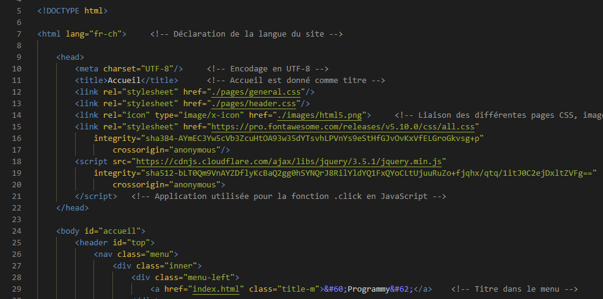

La Programmation
Définition
La programmation informatique est un principe qui consiste à écrire des programmes dans le but de coder un site internet ou créer un jeu vidéo par exemple. Ce sont des suites d’instructions qui sont exécutées durant l’utilisation d'un site ou d'un jeu. La programmation représente la rédaction du code source d’un site ou jeu.
Un peu d'histoire
Le premier calculateur électronique a été inventé en 1946 mais n’était pas programmable. C’est en 1948 que le premier ordinateur voit le jour, le Mark I, créé par John Von Neumann. Il était possible de programmer cet ordinateur mais ce n’est qu’en 1971, lors de la création du processeur, qu’il a pu être possible de permettre à l’ordinateur de réaliser des calculs plus compliqués. La programmation est un gros morceau dans le monde de l’informatique, c’est très intéressant et ludique. Voici un exemple de bout de programme en HTML, un langage utilisé dans le développement web, nous le verrons plus tard.
Il faut savoir aussi que certains langages de programmation possèdent une mascotte qui le représente, nous verrons ceci plus précisément dans la page des différents langages. Elles représentent soit des logiciels, du matériel, … Voici un petit exemple : le PHP a comme mascotte un éléphant bleu avec à l'intérieur le mot "PHP" qui explique le jeu de mot "éléPHPant".

Source en.wikipedia.org